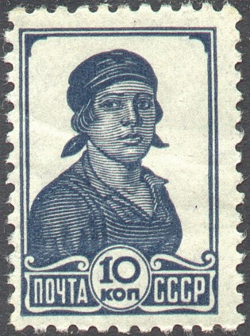
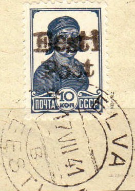
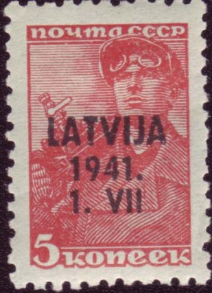

Return To Catalogue - Russia, Sowjet Union, part 1 - Russia, Sowjet Union, part 2 - Russia Overview
Note: on my website many of the
pictures can not be seen! They are of course present in the
catalogue;
contact me if you want to purchase the catalogue.
Russia, Sowjet Union, part 1, part 2
1 R brown and lilac (farmer) 2 R green and light green (sowing farmer) 5 R blue and light blue (tractor) 7 R red and lilac (exhibition building)
3 k black and red 6 k black and red 12 k black and red 20 k black and red
Forgeries exist with the line at the right hand side of the head much thicker than in the genuine stamps.

Forgeries
5 k on 3 R blue 10 k on 5 R green 15 k on 1 R brown 20 k on 10 R red


1929 issue

'Eesti Post' on 10 k blue stamp of Sowjet
Union used in 1941 (expertized)

Overprinted 'LATVIJA 1941. 1. VII' for Latvia
and 'Laisvi Telsiai 1941. VI. 26' issued for Lithuania.
Overprinted 'NEPRIKLAUSOMA LIETUVA 1941 - VI -23' for Lithuania
Some stamps of Russia also received a 'VILNIUS' overprint: 5 k red, 10 k blue, 15 k green, 20 k green, 30 k blue, 50 k brown, 60 k red (arms, larger size), 80 k red (flag, larger size) and 1 R black and red.
Unissued stamps of 1923:

Unlisted airmail stamp
{kind=link}
{kind=link}
{kind=link}